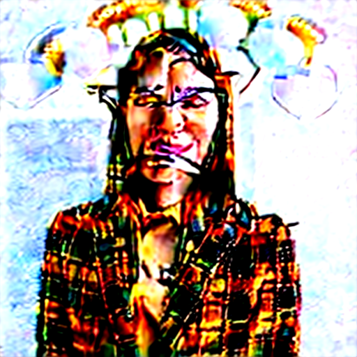

Let the person wear sunglassesman_00 · id_orig 未偵測到臉Let the person wear a police suitman_00 · id_orig 未偵測到臉Let the person wear sunglasseswoman_00 · id_orig 0.1483

Let the person wear a police suitwoman_00 · id_orig 0.1797
Let the person wear sunglassesman_00 · id_orig 0.0939Let the person wear a police suitman_00 · id_orig −0.0894Let the person wear sunglasseswoman_00 · id_orig 0.1468Let the person wear a police suitwoman_00 · id_orig 0.2853
Let the person wear sunglassesman_00 · id_orig 0.655Let the person wear a police suitman_00 · id_orig 0.5908Let the person wear sunglasseswoman_00 · id_orig 0.5131Let the person wear a police suitwoman_00 · id_orig 0.8436